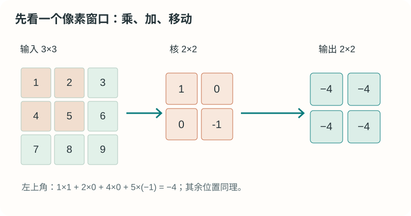
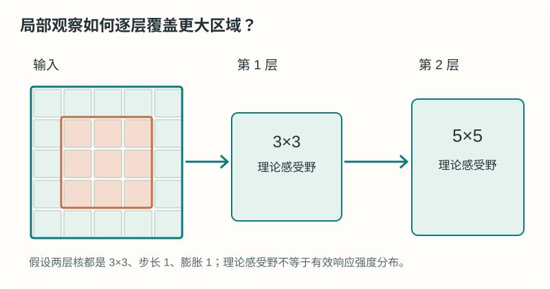

CHAPTER 05 · CONVOLUTION
卷积神经网络：从局部窗口到感受野
不依赖庞大的架构图，先把卷积核如何移动、张量形状怎样变化、有效信息怎样逐层扩展算清楚。
为什么全连接层不适合作为所有图像层的默认方案？
224×224 的 RGB 图像有 150,528 个标量。如果把它直接连接到 1,000 个隐藏单元，仅权重便有 150,528,000 个，并且无法显式使用相邻像素的局部结构。卷积层以局部连接和空间权重共享减少参数，允许相同滤波器在不同位置检测类似纹理。
参数更少不等于计算量必然更低，具体还取决于输出空间尺寸、通道数、分组方式和内存访问。卷积也不是获得平移不变性的充分条件：理想的平移等变关系会受到步长、填充、边缘裁剪和池化的影响。
深度学习框架里的“卷积”常常是互相关
标准 CNN 实现通常不翻转卷积核，而是对局部窗口与核做逐元素乘加，即 cross-correlation。设输入为 1–9 的 3×3 网格，核为 [[1,0],[0,-1]]，无填充、步长 1，则每个 2×2 局部窗口输出 -4。

真实卷积层不仅在空间移动，还要在输入通道上求和。以 PyTorch Conv2d 的 NCHW 约定为例，输入形状是 (N,C_in,H,W)，默认 groups=1 时核权重形状是 (C_out,C_in,K_h,K_w)，输出是 (N,C_out,H_out,W_out)。每个输出通道学习的是独立的一组滤波权重。
输出尺寸为什么会因步长与填充改变？
一维空间方向上，若输入长度 H，单侧填充 P，核大小 K，步长 S，膨胀 D（dilation），输出长度由下面的整数公式给出；宽度方向同理。输出是否包含最后一个不完整窗口由框架的具体实现约定，标准 Conv2d 使用向下取整。
H 为输入尺寸；P 为两侧各自填充；D 为 dilation；K 为核；S 为 stride。
例：输入 32、核 3、填充 1、步长 2、dilation 1，则输出长度是 16。对于 groups=1 且包含 bias 的核，参数量为 C_out × (C_in × K_h × K_w + 1)；无 bias 时移除末尾的 1。分组卷积则需要将每组输入通道数修正为 C_in / groups。
感受野是局部关系逐层复合的结果
第一层 3×3、步长 1 的单个输出看到 3×3 输入区域；再叠一层 3×3、步长 1，第二层的单个输出理论上可依赖原输入 5×5 区域。它们的权重作用不是完全均匀的，所以理论感受野不能直接等同于每个位置对输出的有效贡献。

普通无膨胀卷积时，J 是到前层的累计采样步长，J_l=J_(l−1) × S_l，初始 R_0=J_0=1。
最大池化在窗口内选取最大响应，平均池化取均值，全局平均池化沿空间轴汇总。它们会改变空间分辨率与统计性质，不应被笼统理解为“总是提升平移不变性”。
用 NumPy 验证一次前向计算
无需 GPU，也不必安装 PyTorch。这里手动展开 3×3 输入与 2×2 核的四个窗口，直接得到相关输出。后续可与 PyTorch 的 torch.nn.functional.conv2d 对照，但该示例不等于完整的训练网络。
import numpy as np
image = np.arange(1, 10).reshape(3, 3)
kernel = np.array([[1, 0], [0, -1]])
output = np.empty((2, 2), dtype=int)
for row in range(2):
for col in range(2):
patch = image[row:row+2, col:col+2]
output[row, col] = np.sum(patch * kernel)
assert output.shape == (2, 2)
assert np.all(output == -4)
print(output)这里没有填充、偏置、通道求和或非线性。实际部署还要核查不同框架的 padding、输入布局、数值精度和 kernel orientation；不能将这个 toy demo 当作完整 CNN 性能复现。
来源与实现约定
公式与张量维度以所述 stride、padding、dilation 和 groups 约定为前提；图中数据为教学构造。